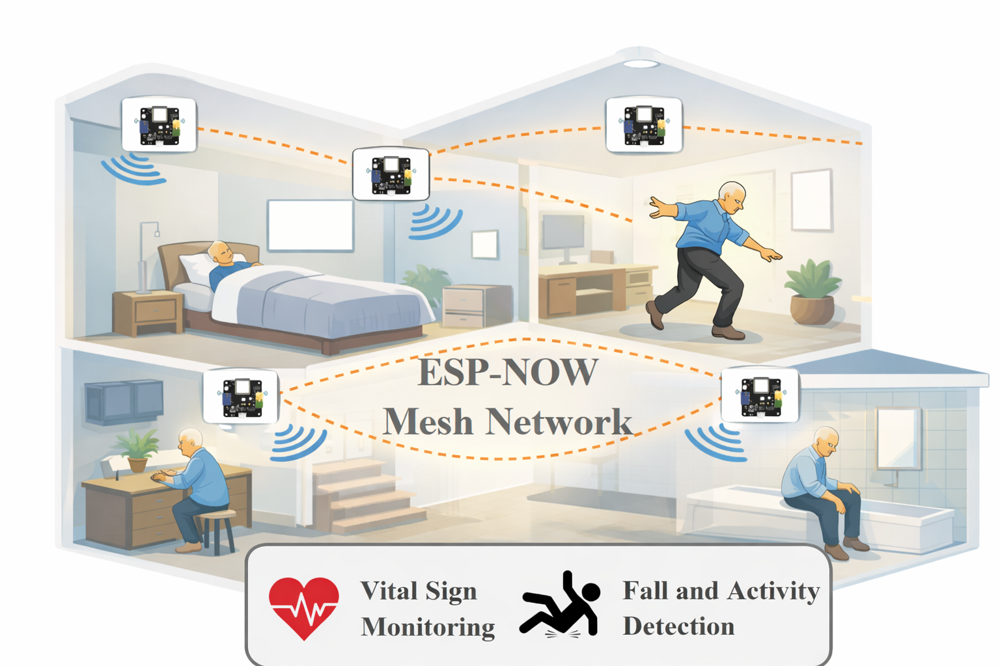
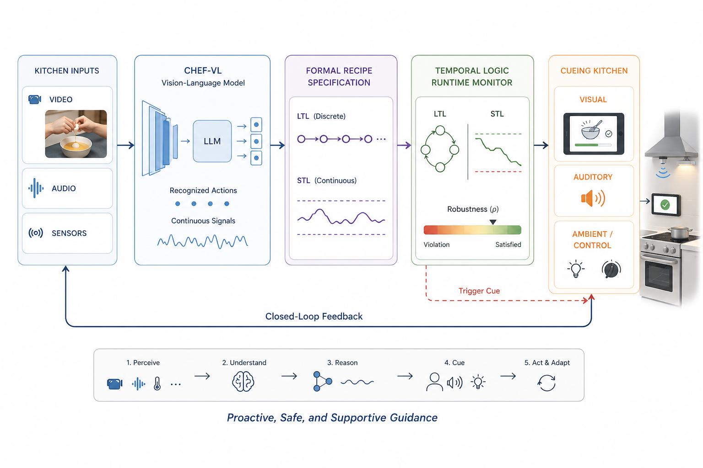
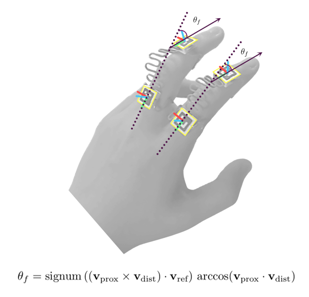
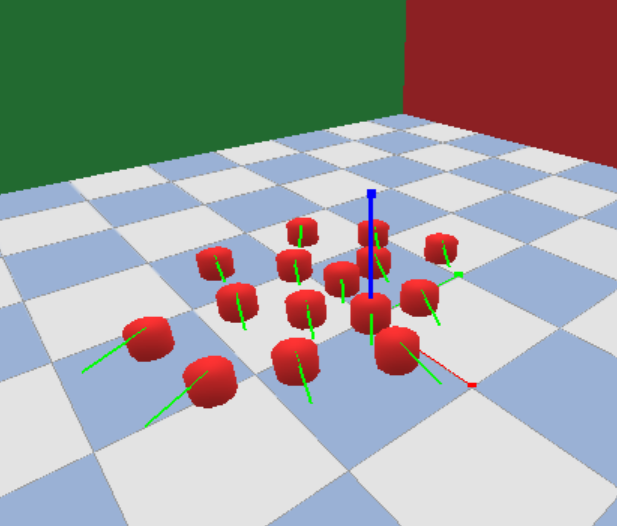
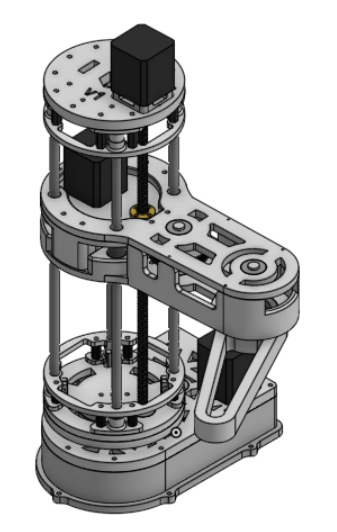

|
Nathan Zhao Incoming electrical engineering student at the Georgia Institute of Technology interested in robotics, assistive technology, embedded systems, and embodied artificial intelligence. My work focuses on building hardware-software systems that integrate mechanical design, electronics, and machine learning for real-world applications. |
{kind=link}
Selected Projects |
|
 |
mmHome: Multimodal IoT Network for Contactless Vital Sign Monitoring and Fall Detection
independent research project Wall-mounted system combining mmWave radar and vibration sensing (piezoelectric, MEMS) for respiration rate monitoring and fall detection using embedded hardware and classical machine learning methods. |
|
 |
Towards Formal Temporal Logic Monitoring for Proactive ADL Assistive Cueing
lab research Formal runtime monitoring layer using temporal logic to link vision-language perception and assistive cueing hardware systems to support people with cognitive impairments in completing meal preparation. |
|
 |
Unified Multi-View Kalman Fusion of ArUco Marker Pose and Hand Landmarks for Continuous Finger Joint Angle Estimation
lab research (mirolab) Vision-based system for real-time finger goniometry by fusing wearable ArUco marker tracking with MediaPipe hand landmarks using pose disambiguation and filtering. |
|
 |
Multi-Agent Boids Simulation with Real-Time Parameter Control
independent research project Exploring real-time model-predictive adaptation of flocking behaviors for coordinated robot navigation in custom PyBullet simulation. |
|
 |
LeSCARA: An Open-Source SCARA Platform for Embodied AI Research
open-source robotics project A low-cost 3D-printed SCARA robotic arm for manipulation experiments, emphasizing commonly available/off-the-shelf hardware, reproducibility, and integration with learning-based control frameworks. |

|
An Intelligent Bimanual Mobile Manipulator for Assisted Living Applications
independent research project A dual telescopic arm mobile robotic system for in-home assistive tasks, integrating manipulation, mobility, and human-centered robotics concepts for elderly care. |
|
Modified version of template found here. |